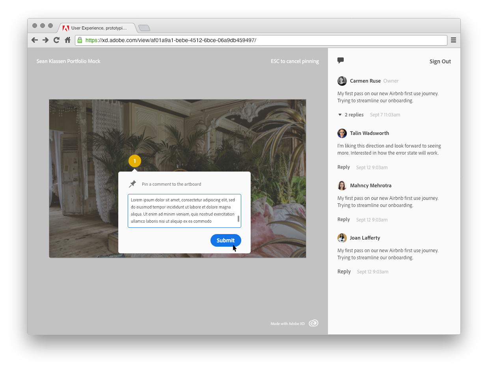

But in the case of remote teams, or sending work to stakeholders outside the
office, we wanted to build a tool that let people talk about work contextually.

I designed a commenting system, first implemented in Adobe Xd prototypes,
that allows people to make comments on each art board of a prototype. We
wanted to nail the basics first, so for v1 I designed the ability to make a
comment, reply to a comment (nested comments), edit and delete a comment,
and place a marker on the art board to indicate the context of your feedback.

This commenting system is live, now! You can use it on any Adobe Xd web prototype.
Look for it soon on other Creative Cloud-hosted assets.